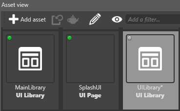

UI libraries
Beginner Artist Designer
UI libraries contain UI elements such as grids, buttons, sliders and so on that you can use and re-use in your UI pages.
Stride projects include a standard library of UI elements. You can create your own libraries of custom elements too.

UI libraries are similar to prefabs in the Scene Editor; you can create your own elements, save them in a custom UI library, and then use them wherever you need across multiple UI pages. You can also nest libraries inside other libraries, just like nested prefabs.
At runtime, you can re-instantiate UI library roots and insert them into an existing UI tree.
Create a UI library
In the Asset View, click Add asset > UI > UI library.
Game Studio adds the UI library to the Asset View.

Alternatively, to create a UI library from an existing UI element:
Select the elements you want to create a UI library from.
Right-click and select Create library from selection.

Game Studio creates a library with a copy of the elements you selected.
Assign a UI library in code
// This property can be assigned from a UI library asset in Game Studio
public UILibrary MyLibrary { get; set; }
public Button CreateButton()
{
// assuming there is a root element named "MyButton" of type (or derived from) Button
var button = MyLibrary.InstantiateElement<Button>("MyButton");
// if there is no root named "MyButton" in the library or the type does not match,
// the previous method will return null
if (button != null)
{
// attach a delegate to the Click event
button.Click += delegate
{
// do something here...
};
}
return button;
}
UI pages have only one root element. UI libraries can have multiple root elements.